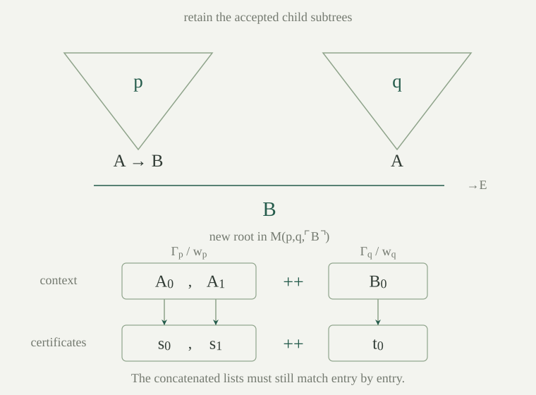

Work in the arithmetic language with the actual proof calculus and syntax codes already fixed. Write \(\ulcorner A\urcorner\) for the code of a sentence and \(\overline n\) for the numeral denoting \(n\). PA consists of the seven axioms of \(Q\) together with every induction axiom with parameters.
An axiom certificate has one of two forms. A one-element certificate \([i]\), with \(i<7\), names the corresponding Robinson axiom. A three-element certificate \([7,k,e]\) supplies the number of parameters and a code for an arithmetic formula \(\theta(x_0,\ldots,x_{k-1},z)\). In this certificate code, represent the displayed variables by auxiliary-name leaves \(c_0,\ldots,c_{k-1},c_k\). They are placeholders to be bound when the axiom is constructed. Reject the code unless it is a recognized formula with no unbound quantified slots or free-name leaves and no auxiliary name beyond these placeholders. Abbreviate its base and induction-step formulas by \(B_\theta(\vec x):=\theta(\vec x,0)\) and
From a valid certificate construct the sentence
Define the axiom-certificate relation \(E_{\mathrm{PA}}(a,s)\) to hold when \(s\) has a valid form and its constructed sentence has code \(a\). Use the same fixed pairing and list codes as in finite-sequence coding. Codes not matching these forms are rejected. This specifies a total test, including its behavior on invalid inputs. The auxiliary placeholders do not survive in the constructed axiom, which is a sentence of the original arithmetic language.
The relation \(E_{\mathrm{PA}}\) is primitive recursive, and for every arithmetic sentence \(A\),
The seven fixed codes are tested by finite comparison. In the other case, parsing the certificate, checking its formula and auxiliary-name bounds, substituting \(0\) and \(Sc_k\) for the induction placeholder, and taking universal closures are the primitive-recursive syntax operations of syntax recognition and auxiliary-constant replacement. To bind \(c_k\), traverse the actual syntax history: replace that auxiliary leaf by the new quantified slot, shift existing slots to make room, retain other auxiliary leaves, and reconstruct compound nodes from their rewritten children. Add the universal quantifier. After forming the induction implication, bind all remaining parameter placeholders to their numbered slots and add the fixed number \(k\) of universal quantifiers. Every traversal and iteration uses the specified primitive-recursive syntax programs. Their composition computes the proposed induction code, so comparison with \(a\) is primitive recursive.
An accepted certificate therefore constructs either a Robinson axiom or an induction axiom with finitely many parameters; both are in PA. Conversely, a Robinson axiom has its fixed tag. An induction axiom is obtained from a particular finite parameter list and a particular formula, whose code supplies the second certificate. The case \(k=0\) is included. Encoding the displayed variables by the auxiliary placeholders, then performing exactly these binding operations, identifies the result with the canonical universal closure of the parameter-indexed induction schema. The established code identities preserve the parameter order and every pre-existing quantifier, without adding any axiom.
Let \(C(p,a)\in\{0,1\}\) be the certified PA proof checker: the characteristic function of the certified proof checker using \(E_{\mathrm{PA}}\): value \(1\) means acceptance. A certificate contains a coded derivation and a list of axiom certificates matching its root assumptions. The derivation has the same nineteen rule tags, including the existing freshness tests. No new proof rule is being declared valid.
The checker is primitive recursive, and its existing certificate theorem, together with , gives
Here is the particular primitive-recursive presentation used for \(C\). First build the axiom test by the literal branches of : decode the certificate list, test its length and tag, compare with the fixed seven-element axiom-code table in the Robinson case, and otherwise run the native recognizer and the stated binding-and-closing traversals in the induction case. Each comparison is a zero-or-one test; invalid shapes return zero.
For a proof certificate \(p\), decode exactly two entries: a derivation code \(d\) and a list \(w\) of axiom certificates. Compute the derivation check by the actual course-of-values table of nineteen local rule tests. Read the root context \(\Gamma\), require that the root conclusion equals \(a\), and require that \(a\) is an original-language sentence. Test that \(\Gamma\) and \(w\) have equal lengths. Finally scan their paired entries in order, starting with one and multiplying by the sentence test and the explicit axiom test at each pair. Define \(C\) to be the product of these Boolean tests. These instructions use the actual list, syntax, bounded-iteration and history programs already constructed; they specify the whole program, including its failure branches.
In particular, the left side refers to proofs of the shared calculus from the actual PA axiom set. It does not use a new calculus chosen merely because its proofs would be easier to describe.
Use the canonical graph construction for the literal primitive-recursive program \(C\) just specified. It gives a graph formula \(G_C(p,a,b)\), in existential-prefix bounded form, with its defining equations provable in PA. Choose one such existential-prefix bounded normal form together with its PA equivalence to the raw program graph, and fix it once and for all. Its normal form need not be syntactically unique. Define the proof predicate \(\operatorname{Prf}\) and provability predicate \(\operatorname{Pr}\) by
Both formulas have the \(\Sigma_1\) prefix form: after renaming bound variables, place their finite existential witness lists together before the bounded matrix. The graph records a successful computation of the actual checker, not merely an externally equivalent relation. Its uniform totality and uniqueness and its defining equations apply to arbitrary internal inputs.
For a sentence \(A\), call \(\operatorname{Pr}(\overline{\ulcorner A\urcorner})\) its provability sentence and abbreviate it by \(\Box A\). These are abbreviations for formulas of the original arithmetic language. We do not identify this formula inside PA with the earlier arbitrarily chosen numeralwise representative.
For all ordinary natural numbers \(p,a\), and every arithmetic sentence \(A\),
Standard correctness of the graph identifies \(G_C(p,a,b)\) with \(C(p,a)=b\). Set \(b=1\), existentially quantify \(p\), and apply the certificate theorem.
The work below goes further: its conclusions are PA derivations, rather than only truths in \(\mathbb N_A\).
Let \(H\) be a sentence of the original arithmetic language. If every model \(M\models\mathrm{PA}\) satisfies \(H\), then \(\mathrm{PA}\vdash H\). The same conclusion applies when function abbreviations in \(H\) have first been expanded using their canonical graph formulas.
Apply deductive completeness to \(\mathrm{PA}\models H\). For graph-defined abbreviations, their conservative elimination gives a sentence in the original language to which completeness applies.
The crucial restriction is on induction inside \(M\). An arbitrary externally specified subset of a nonstandard model need not satisfy induction. Every invariant used below must be given by an arithmetic formula, with the current inputs as parameters. Graph totality lets us replace each program-value abbreviation by existentially quantified graph outputs. The resulting invariant is therefore one of the formulas to which PA's own induction schema applies.
For example, an induction invariant may say: “if all tests through the current bound are true, the proof-building program's output is accepted with the prescribed conclusion.” Acceptance, the test, the output and the conclusion code are all arithmetically defined. Proving the base and successor cases establishes this invariant for every element of \(M\), including its nonstandard elements. Completeness then supplies a derivation of its universal closure in the shared proof calculus.
This is a proof of the existence of a PA derivation. It does not claim that the completeness argument itself is an effective algorithm extracting that derivation. The proof-building programs that occur inside the assertion are nevertheless the explicit primitive-recursive procedures described here.
For each fixed formula \(A(x_0,\ldots,x_{r-1})\), define its numeral-substitution function by
This is the actual simultaneous numeral-substitution function for our syntax, primitive recursive by the numeral and free-name substitution theorem. For the chosen native presentation, compile the fixed formula structurally: an input-name leaf receives its input numeral code, and each remaining constructor is rebuilt with its original tag and the recursively computed child codes. Its canonical graph allows us to use \(\operatorname{sub}_A\) as a conservative function abbreviation in PA. Thus the notation \(\operatorname{Pr}(\operatorname{sub}_A(\vec x))\) abbreviates an original-language formula obtained by existentially quantifying the graph's output and applying \(\operatorname{Pr}\) to it.
Write this parameterized provability formula as \(\Box A(\dot{\vec x})\). The dots indicate that the values of the variables are turned into numerals in a coded sentence; they do not mean that a variable is literally substituted into its own quotation. With no parameters, the graph notation still contains an existential output variable. It is PA-provably equivalent to the ordinary \(\Box A\), by ; it need not be the same formula as a piece of syntax.
For a sentence \(A\), regard it as a formula with an empty parameter list. PA proves that its graph-based parameterized box is equivalent to the ordinary \(\Box A\).
The empty-input substitution program returns the fixed number \(\ulcorner A\urcorner\) in the standard model. Its canonical graph has that same fixed numeral as its unique output in every PA model, by numeralwise correctness of the selected graph. Thus, inside PA, the graph's existential output variable can be replaced by \(\overline{\ulcorner A\urcorner}\). The remaining formula is exactly \(\exists p\,\operatorname{Prf}(p,\overline{\ulcorner A\urcorner})\). This proves equivalence; it does not erase the extra graph quantifier by syntactic identity.
Write \(\operatorname{Acc}(p,a)\) for \(C(p,a)=1\). Suppose \(B\) is a recognized formula with one open slot, \(s,t\) are recognized closed terms, and the displayed conclusions are recognized sentences. In every PA model, the actual equality-substitution constructor turns accepted proofs of \(s=t\) and \(B(s)\) into an accepted proof of \(B(t)\). The actual existential-introduction constructor turns an accepted proof of \(B(t)\) into an accepted proof of \(\exists z\,B(z)\). These assertions include the literal instantiation codes and the original root axiom certificates.
An accepted certificate records a derivation tree, its root context, its conclusion, and an axiom-certificate list. The internal preservation lemmas retain four pieces of information:
The checker traverses a finite table indexed by syntax or proof codes. Its entries contain the local results for smaller child codes. When we insert a subtree, induction on this table proves that its already accepted entries are unchanged: the local rule reads the same tag, arguments and smaller entries. At a newly attached root, only the local comparisons remain.
Equality substitution is a useful example. Its input includes an equality proof, a proof of one instance of a formula with a single open slot, the formula code, and the two term codes. The root checks the actual instantiation operation on both terms. The instantiation identities identify those outputs with the child conclusion and proposed conclusion. Thus acceptance follows from literal code identities and the checked child records; truth of the resulting equation is not used as a replacement for checking the rule.
For existential introduction the root compares the accepted child conclusion with the actual body instance at the witness term, then retains the child context and its axiom certificates. Its syntax tests are exactly the body, term and sentence hypotheses in the statement. This proves the second assertion. All lists and histories here are internal lists, and the induction invariants are arithmetic formulas as explained in . The other proof constructors used in the bounded builders require their corresponding local checks as well.
The proof builders retain root assumptions from the original arithmetic language. Such formulas contain no auxiliary constants. Their closed numeral instances and the quantified bodies built from them also contain none. Consequently the same auxiliary constant \(c_0\) may be used for each local universal-introduction or existential-elimination construction.
Recognizing a formula records an upper bound on its free names, quantified slots and auxiliary names. An auxiliary-name bound of zero means that no auxiliary constant occurs. Prove this from the actual syntax recursion: a numeral or original function symbol contributes no occurrence, a connective combines the bounds of its children, and a quantifier changes the quantified-slot bound without introducing an auxiliary name. The same induction is expressed on the internal syntax history, so it applies to arbitrary internal recognized codes. Applying it to every member of the accepted axiom context makes the checker's context-freshness test return true.
Consider a universal-introduction step intended to prove \(\forall z\,(z\le\overline n\to B(z))\). Work temporarily with the assumption \(c_0\le\overline n\), derive \(B(c_0)\), and discharge that assumption. The resulting child proof has conclusion \(c_0\le\overline n\to B(c_0)\), while its remaining context consists only of the retained PA axioms. Universal introduction is now permitted: \(c_0\) is absent from that context and from the quantified formula before its open slot is filled.
The temporary proof is allowed to mention \(c_0\); the rule's freshness condition concerns the context after discharge and the original quantified body. For existential elimination, the selected witness assumption is likewise removed before the freshness test on the final conclusion and remaining context. These are explicit deletions and inclusion checks on the proof record. We never appeal to a renaming theorem for an arbitrary internally supplied proof.
Fix a formula \(A(x_0,\ldots,x_{r-1})\) and a PA derivation of its universal closure. There is a specified primitive-recursive program \(S_A\) such that, in every PA model and at every internal input tuple \(\vec n\), its output is accepted with conclusion code \(\operatorname{sub}_A(\vec n)\).
Choose one ordinary accepted certificate for the fixed universal theorem. The program begins with its constant code and repeatedly appends the actual universal-elimination constructor, using the numeral code of the next input coordinate as its witness term. The prefix length \(r\) is fixed, so this is a finite composition of primitive-recursive programs.
Induct outside arithmetic on the number of remaining quantifiers. After \(j\) steps the retained certificate has the literal code of the remaining universal prefix, with the first \(j\) parameter values replaced by their internally constructed numerals. If no quantifier remains, that code is exactly \(\operatorname{sub}_A(\vec n)\). Otherwise the current target is a universal sentence, its extracted body is recognized with one open slot, and the next numeral is a recognized closed term. The actual instantiation identities make its instance code the next stage of the same prefix. The checked universal-elimination constructor therefore establishes the induction step.
This invariant follows the canonical universal closure's actual parameter order and bound-slot indices. It proves a statement about arbitrary internal input values, even though the number of elimination steps and the initial PA proof are fixed externally. In particular, a fixed theorem \(\forall\vec x\,(A\to B)\) can be specialized and combined with an internally supplied proof of \(A(\overline{\vec x})\) using modus ponens; the output then has the literal code of \(B(\overline{\vec x})\).
Let \(M(p,q,b)\) be the specified certified modus-ponens operation: keep the two derivation subtrees, attach implication elimination, and concatenate their assumption and axiom-certificate lists. In the conservative graph notation, PA proves, for all sentence codes \(a,b\),
The hypothesis that \(a,b\) are sentence codes is part of the assertion; for fixed sentence codes it has a PA proof. Here \(\operatorname{imp}\) is the actual constructor for an implication code.
Unfold the canonical graph's defining equations for the output record and checker. The new root has implication-elimination tag. Its two child conclusions are \(\operatorname{imp}(a,b)\) and \(a\); its conclusion is \(b\). On ordinary inputs this native transformation has exactly the same output code as the earlier certified modus-ponens operation, by expanding their pair, list and node constructors. Its context is the concatenation of the two input root contexts. Each input context is included in that concatenation, and each child's local acceptance information is retained. The two axiom-certificate lists are concatenated in the same order, so their lengths still agree with the combined context and each paired axiom test is unchanged.
These statements about lists are proved in PA by induction on the coded lists: the empty case reduces to the defining equations, and a nonempty list reduces to its head and tail. Induction on the checker history shows that retaining a subtree retains its accepted checker entries; strictly smaller child codes are exactly the condition already used by the checker. At the new root its local test is therefore true. All graph outputs used here exist by uniform primitive-recursive totality. This proves one formula with arbitrary \(p,q\), including internal values in a nonstandard model, rather than a separate verification for each pair of numerals.
